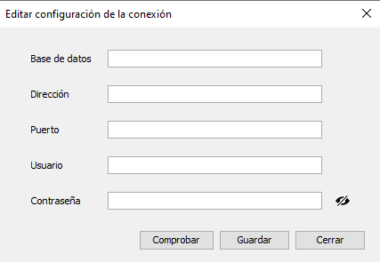
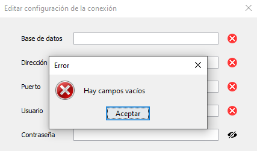

Configuración de la conexión

Esta pantalla intentará cargar los datos de un fichero llamado "configuración.properties" (el mismo donde se guardan)
en caso de existir se mostrarán en sus campos correspondientes
En esta pantalla se puede establecer los datos de la conexión a la base de datos:
- Nombre de la base de datos
- Dirección de la base de datos
- Puerto de la base de datos
- Usuario de la base de datos
- Contraseña
Estos campos tienen unas restricciones:
- Nombre no puede estar vacío
- Dirección no puede estar vacío
- Puerto no puede estar vacío
- Puerto tiene que ser un número entre 1 y 65535
- Usuario no puede estar vacío
En la parte inferior se puede observar un icono de un ojo y 3 botones
- El icono del ojo muestra la contraseña mientras se le esté haciendo click.
- El botón de Comprobar comprobará la contraseña contra la base de datos
comprobando que la conexión funcione y existan las tablas necesarias
indicando cualquier error que pueda producirse. En el caso de no existir las tablas
preguntará si se quieren crear.

- El botón de Guardar, guardará en un archivo llamado "configuración.properties", que
que se encontrará en el mismo directorio que la aplicación, la configuración de la base de datos
- El botón de Cerrar cerrará la ventana